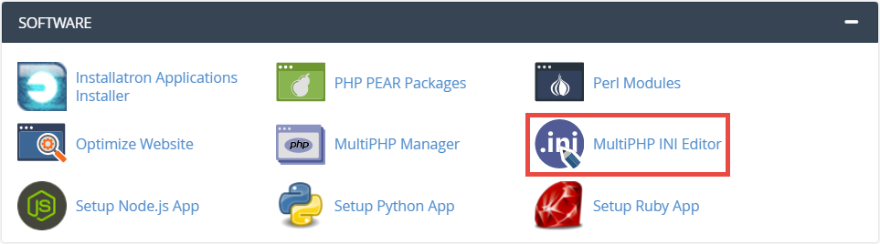

Advanced Configuration of Kora
This document explains some advanced features of Kora, which may only need to be configured in certain circumstances.
Using mod_rewrite in Kora
If your installation will exist at a URL with a subdirectory, it is important to adjust the ".htaccess" file inside of "public" to reflect this. Note: This is only applicable to a Kora installation accessible by subdirectory and not for one existing at a domain-level or subdomain-level URL. For an explanation of these circumstances, please see the "Create Kora Installation URLs" part of the Reclaim/DoOO Installation guide.
-
If you have not yet done so, confirm that
mod_rewrite. See "Enabling mod_rewrite" section of the "System Requirements" documentation. -
Edit the ".htaccess" file inside the "public" directory.
-
If using a cPanel interface, follow the instructions for editing files in "Upload and Prepare Kora Application Files via cPanel File Manager," a section in the Installation guide.
-
If using SSH or Terminal, navigate to "kora/public" and use
sudo nano, this time to edit ".htaccess". An explanation for usingnanowith super user privileges is also contained in the "Enabling mod_rewrite" section of the "System Requirements" documentation.
The file's code will begin with:
<IfModule mod_rewrite.c> <IfModule mod_negotiation.c> Options -MultiViews -Indexes </IfModule> RewriteEngine On #RewriteBase #add base url ex: www.website.com[/this part is your base url, the url subdirectory where you want your installation to be accessible from] #RewriteBase /your_base_url -
-
Remove the
#from the final line above and provide the subdirectory part of your URL for accessing your installation. For instance, if you installed Kora and created a symbolic link to a directory within your root called "kora", the last few lines might look like:RewriteEngine On #RewriteBase #add base url ex: www.website.com[/this part is your base url, the url subdirectory where you want your installation to be accessible from] RewriteBase /kora -
Be sure to save your changes when exiting.
Increasing Memory Usage and File Size Limits
A Kora installation relies on default values for memory and storage usage by PHP. However, these will be set too low to handle Kora installations where large files will be uploaded to the installation, such as high-resolution images, image-dense pdfs, or 3D objects with detailed surface texture files. To deal with this, the ".htaccess" file saved in the "public" directory contains a list of PHP attributes and associated increased values. In that file, they appear like this:
#Recommended but only use these if your system allows overwrites
#php_value upload_max_filesize 4998M
#php_value post_max_size 4999M
#php_value memory_limit 5000M
#php_value max_execution_time 3000
#php_value max_input_time 3000
If your server environment allows overwrites via the .htaccess file, simply edit this file and remove the # before each attribute to enable the overwrite. For editing instructions, see links to multiple explanations in the section above, "Using mod_rewrite in Kora".
In some cases however, such as in Domain of One's Own or other Reclaim Hosting-provided environments, these values cannot overwritten via this method. Instead, these values may be managed by the provided server graphical interface; in the case of Reclaim Hosting, this is the cPanel. In this example, these values are managed by a cPanel application called "MultiPHP INI Editor."
-
To adjust these values, begin by clicking on this application.

-
Select the domain or subdomain where your installation is.

-
All of the overwritable PHP attributes for the selected domain or subdomain will appear; find each of those listed in the code block above and adjust their values as necessary. Be sure to save the new settings.
GitLab Integration
Kora includes the option to allow users to sign up and log in using GitLab's authentication system, via their OAuth API. This can be implemented with any type of GitLab account or installation – including a gitlab.com free account, a GitLab Community Edition (CE) instance personally hosted, a GitLab Enterprise Edition (EE) instance managed through gitlab.com, etc. – and will allow any user who has a legitimate account for that GitLab location (whether privately hosted or through gitlab.com) to authenticate their Kora account.
Individual GitLab User Integration
This option will be tied to one specific user's GitLab account.
-
Begin by navigating to the GitLab instance you wish to use for this process and log in, then go to the account's settings page.
-
In the left-hand sidebar, click on "Applications". This will default to showing the options for "Add new application"
-
Fill in the required information for adding a new application. The name will be whatever identifying name you wish to give this newly-created link; it is recommended you reference this Kora installation's URL for specificity, but any name you choose will work.
-
In the "Redirect URI" text box, use the following example to put in the URI for your specific Kora instance. In this example URI, the Kora instance's URL is at https://example.org/kora/, so this creates the URI of:
https://example.org/kora/login/gitlab/callbackNotice that what has been added to the URL is "/login/gitlab/callback" in order to create the URI.
-
Leave the box for the setting "Confidential" checked; this is the default setting.
-
Check the box for the "read_user" scope and then click "Save application" after the list of scopes.
-
You will be redirected to the page with your "Application ID" and "Secret." You will be copying each of these into your Kora Configuration File page of your installation.
-
When viewing your installation's Kora Configuration File page (accessible via the right sidebar, under the "Management" section), type in the GitLab instance's website into the "GitLab Client" box.

For instance, for a free account on gitlab.com, use "https://gitlab.com"
-
Copy the GitLab "Application ID" from Step 7 above into the Kora Configuration Page box for "GitLab Client ID"; copy "Secret" to "GitLab Client Secret."
-
Click "Update Configuration File" to save these settings.
Warning
The GitLab text boxes cannot contain any spaces in between characters (spaces at the beginning or end will be automatically removed); otherwise your Kora installation will 'break.'' To fix this, you will need to manually edit the .env file in Kora's main directory, to change the offending text to something without spaces in the middle. Doing so will restore your installation to working order.
GitLab Instance Admin Integration
GitLab integration may also be achieved at the Admin level in any GitLab instance with these settings available, such as a personally-hosted instance. This has the benefit of being manageable by any user with administrator privileges for the GitLab instance.
-
Begin by navigating to the GitLab instance you wish to use for this process and log in, then go to the "Admin Area."
-
In the left-hand sidebar, click on "Applications". This will default to showing the options for "Add new application"
-
Fill in the required information for adding a new application. The name will be whatever identifying name you wish to give this newly-created link; it is recommended you reference this Kora installation's URL for specificity, but any name you choose will work.
-
In the "Redirect URI" text box, use the following example to put in the URI for your specific Kora instance. In this example URI, the Kora instance's URL is at https://example.org/kora/, so this creates the URI of:
https://example.org/kora/login/gitlab/callbackNotice that what has been added to the URL is "/login/gitlab/callback" in order to create the URI.
-
Leave the box for the setting "Confidential" checked; this is the default setting.
-
Check the box for the "read_user" scope and then click "Save application" after the list of scopes.
-
You will be redirected to the page with your "Application ID" and "Secret." You will be copying each of these into your Kora Configuration File page of your installation.
-
When viewing your installation's Kora Configuration File page (accessible via the right sidebar, under the "Management" section), type in the GitLab instance's website into the "GitLab Client" box. For instance, for a personally hosted GitLab instance at another subdomain alongside your Kora instance, it could be "https://gitlab.example.org."
(For an image of this box and those for the next step, please see Step 8 in the section above, "Individual GitLab User Integration")
-
" Copy the GitLab "Application ID" from Step 7 into the Kora Configuration Page box for "GitLab Client ID"; copy "Secret" to "GitLab Client Secret."
-
Click "Update Configuration File" to save these settings.
Warning
The GitLab text boxes cannot contain any spaces in between characters (spaces at the beginning or end will be automatically removed); otherwise your Kora installation will 'break.'' To fix this, you will need to manually edit the .env file in Kora's main directory, to change the offending text to something without spaces in the middle. Doing so will restore your installation to working order.
Removing GitLab Integration
To remove GitLab integration, simply replace the URL in the "GitLab Client" box with a single word or random character string (without spaces). This will remove the "Login with GitLab" button on the login page. If you wish to also remove the ID and Secret, you can also replace these with a single word or random character string (again, without spaces).
Warning
The GitLab text boxes cannot contain any spaces in between characters (spaces at the beginning or end will be automatically removed); otherwise your Kora installation will 'break.'' To fix this, you will need to manually edit the .env file in Kora's main directory, to change the offending text to something without spaces in the middle. Doing so will restore your installation to working order.